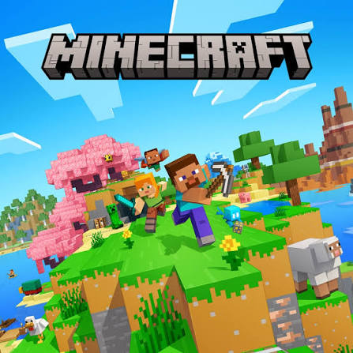
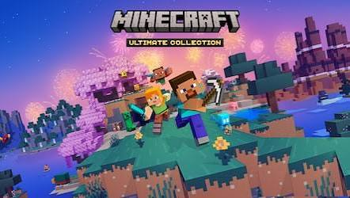
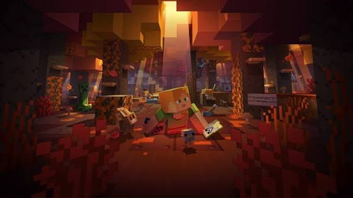

Minecraft was created by Markus "Notch" Persson in May 2009 as a weekend indie project. Originally called "Cave Game," it featured a simple 3D sandbox where players could place and break blocks with limited textures. Despite its bare-bones look, it quickly caught on in early gaming forums.

As the community exploded, survival mode, crafting recipes, redstone, and iconic mobs like Creepers were added. On November 18, 2011, version 1.0 was officially launched at MineCon in Las Vegas, marking the official end of beta and proving indie games could achieve massive mainstream success.

In September 2014, Mojang was acquired by Microsoft. Under Microsoft, the game expanded across every platform imaginable-from mobile phones to consoles and classrooms. Today, it remains a massive cultural icon and holds the crown as the best-selling video game ever made.
